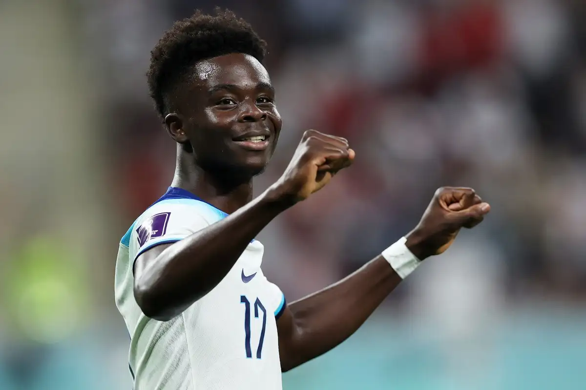

<!DOCTYPE html>

<html>


</html>


<head>
    <meta charset="utf-8">
    <title>
        History about Arsenal Star player Bukayo Saka
    </title>
    <link rel="stylesheet" href="css/style.css">


</head>

<body>
    <h1>
    Arsenal Starboy Bukayo Saka
    </h1>
    
    <div class="box">
        <P><a href="https://www.premierleague.com/players/49481/Bukayo-Saka/stats">Bukayo Saka stats</a> <strong>Bukayo Saka</strong> is a professional football player who was born on September 5, 2001, in London, England. He is of Nigerian descent and plays primarily as a winger or full-back. Saka began his football journey at a very young age, playing for local clubs before joining the youth academy of Arsenal FC in 2008, at the age of seven.</P>      </div>
    <div class="box">
    <p>Saka made rapid progress through the Arsenal youth ranks, and his performances earned him a call-up to the first team in 2018, when he was just 17 years old. He made his senior debut for Arsenal in a <em>Europa League</em> match against Vorskla Poltava on November 29, 2018, becoming the youngest player to debut for the club in a European competition.
        </p></div>
    <div class="box">
    <p>Saka made his <em>Premier League</em> debut for Arsenal on January 1, 2019, coming on as a substitute in a 4-1 win over Fulham. He continued to make sporadic appearances for the first team in the 2018/19 season, but it was during the 2019/20 season that he really made his mark.
        </p></div>
    <div class="box">
    <p>Saka's versatility was a major asset for Arsenal, as he was able to play in multiple positions including left-back, left-wing, and central midfield. He made a total of 38 appearances for the Gunners that season, scoring four goals and providing 11 assists in all competitions.
        </p></div>
    
    <div class="box">
        <p>Saka's performances did not go unnoticed, and he was named Arsenal's Player of the Season for the 2019/20 campaign. His performances also earned him a call-up to the England national team in August 2020, and he made his debut in a UEFA Nations League match against Denmark on September 8, 2020.</p></div>
    <div class="box">
        <p>Saka's standout moment for England came in the Euro 2020 tournament, where he played a pivotal role in the team's run to the final. He scored his first international goal in England's group stage win over the Czech Republic and provided crucial assists in the knockout rounds against Germany and Denmark.</p></div>
    <div class="box">
        <p>Although England were ultimately defeated by Italy in the final, Saka's performances earned him widespread praise and cemented his place as one of the brightest young talents in world football.</p></div>
    <div class="box">
        <p><a href="https://www.premierleague.com/players/49481/Bukayo-Saka/stats">Bukayo Saka stats</a> In summary, Bukayo Saka has had a meteoric rise in his football career, starting from humble beginnings in local youth teams to becoming a key player for both Arsenal and the England national team. At just 21 years old, he has already achieved a lot and has the potential to achieve even more in the future.</p></div>
    <div class="box">
        <p>However, like any other player, Saka also has areas in his game that can be improved upon.</p>
    </div>
    <h2>Strengths:</h2>
    <oi>
        <div class="box"><li>Versatility: Saka's ability to play in multiple positions is one of his biggest strengths. He is comfortable playing as a winger on either side of the pitch, as well as a left-back. His versatility allows his team to switch formations and adjust to the opposition's tactics, making him a valuable asset.</li></div>
        <div class="box"> <li>Dribbling: Saka has excellent dribbling skills and is very comfortable running with the ball at his feet. He has a low center of gravity, making it difficult for defenders to dispossess him.</li></div>
        <div class="box"><li>Crossing: Saka is an excellent crosser of the ball. He has good vision and is able to pick out his teammates with accurate crosses from wide positions. His crosses often create goal-scoring opportunities for his team.</li></div>
        <div class="box"> <li>Work-rate: Saka has a high work-rate and is constantly pressing and harrying his opponents. He is willing to track back and help his defenders when his team is under pressure.</li></div>
    </oi>
    
    <h2>Weaknesses:</h2>
    <oi>
        <div class="box"> <li>Finishing: Saka's biggest weakness is his finishing. While he is an excellent crosser of the ball, his finishing needs improvement. He tends to miss good scoring opportunities, and his shots often lack power and accuracy.</li>
        </div>
        <div class="box"> <li>Physicality: Saka is not the strongest or most physical player. He can struggle against defenders who are stronger than him, and he needs to work on his physicality to become a more complete player.</li>
        </div>
        <div class="box"> <li>Decision-making: Saka can sometimes make the wrong decisions when in possession of the ball. He needs to improve his decision-making to become a more effective player.</li>
        </div>
        <div class="box"> <li>Defensive positioning: While Saka is comfortable playing as a left-back, his defensive positioning needs improvement. He can sometimes get caught out of position, leaving gaps for the opposition to exploit.</li>
        </div>
        
    </oi>
    <h2>Conclusion</h2>
    <div class="box">
    <p> Overall, Bukayo Saka is a talented young player with many strengths, but there are still areas of his game that need improvement. With the right guidance and coaching, he has the potential to become a top-class player.</p></div>
    

</body>